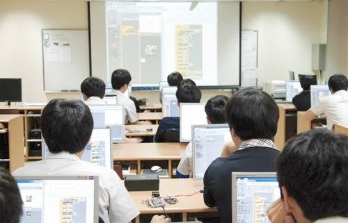

서비스 소개
UI/UX 웹 개발 기초 수업 신청

UI/UX 수업 신청 조건을 확인하고, 수업이 끝난 뒤 피드백 요청 내용을 작성해 보세요.
주요기능
빠른 시작
UI/UX 기초 수업의 학습 목표와 희망 수업 시간을 간편하게 설정할 수 있습니다.
쉬운 사용
서비스 안내부터 수업 신청, 피드백 요청까지 순서대로 확인할 수 있습니다.
안전한 관리
신청 안내에 동의한 뒤 수업 신청 설정을 시작할 수 있습니다.
이용 방법
- 수업 신청 안내를 확인하고 동의합니다.
- UI/UX 수업에서 배우고 싶은 내용과 희망 수업 시간을 설정합니다.
- 수업 신청 내용을 최종 확인하고 설정을 완료합니다.
- 실제 수업이 끝나면 수강 완료 여부를 확인하고, 피드백 요청서와 이메일을 작성합니다.
수업 신청 준비
신청자 정보
0 / 10
수업 신청 안내 동의
동의 후 수업 신청 설정을 시작할 수 있습니다.
UI/UX 수업 신청 설정
1 · 정보 2 · 조건 3 · 확인
수업 신청 정보를 입력해 주세요.
희망 수업 조건을 선택해 주세요.
입력한 내용을 확인해 주세요.
학습 목표
희망 수업 시간
질의응답
수업 신청 내용 확인이 완료되었습니다.
신청 내용을 확인했습니다. 이는 실제 예약이 아닌 시연용입니다. 수업을 수강한 뒤 피드백 요청 단계로 진행해 주세요.
강사 피드백 요청서 작성
수업을 실제로 수강했다면 수강 여부를 체크하고 피드백받고 싶은 내용을 작성해 주세요. (수강 여부는 시연용 자가 확인이며 검증하지 않습니다.)
작성한 피드백 요청서
학습 목표
요청 항목
요청 내용
수업 종료 후 강사 피드백 이메일 신청
작성한 요청서를 확인한 뒤 이메일을 입력해 주세요. 실제 이메일은 전송되지 않습니다.
피드백 요청서를 먼저 작성한 다음 이메일을 입력해 주세요.